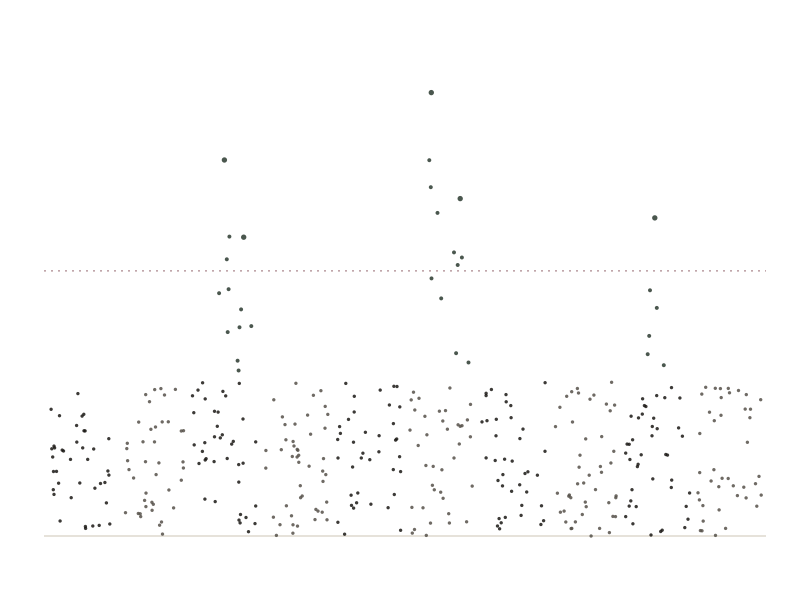

01 — Statistical genetics
The genetics of risk and resilience.
Genome-wide association, rare-variant analysis and polygenic scoring across familial and sporadic ALS — including the oligogenic architecture now reshaping how risk is understood and tested.
Explore →